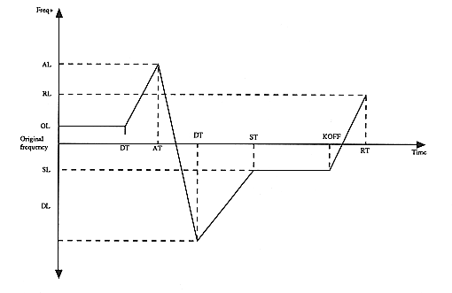

OL:OFSET LEVEL AL:ATTACK LEVEL DL:DECAY LEVEL SL:SUSTAIN LEVEL RL:RELEASE LEVEL DT:DELAY TIME AT:ATTACK TIME DT:DECAY TIME ST:SUSTAIN TIME RT:RELEASE TIME
DLY:
Table number of the time table for PEG delay time. The timetable contains the number of counts per unit time. The count number is calculated from the time (DELAY TIME) entered in the editor, the count number of the time table closest to the count number in absolute difference is searched, and the table number is set here.
Count = DELAY TIME (msec. Unit time)
OL:
This is the offset level from the key-on note when the key is turned on. (OFSET LEVEL)
AR:
This is the level of change per unit time.
=ATTACKLEVEL/AT
AT:
The table number of the timetable for the time to reach the attack level. The timetable contains the number of counts per unit time. The number of counts is calculated from the time (ATTACK TIME) entered in the editor, the count number of the time table closest to the count number in absolute difference is searched, and the table number is set here.
Count = ATTACK TIME / 2 (msec)